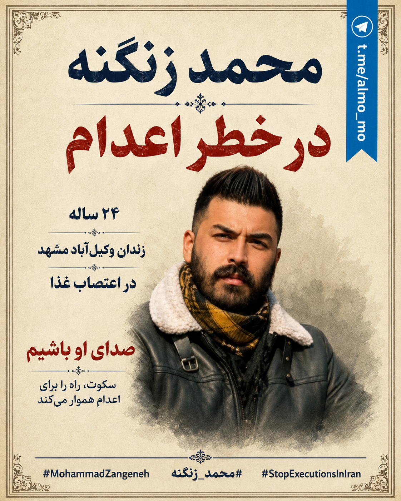

در حال بارگذاری…
۰ از ۱۰۰۰ استفاده شده

محمد زنگنه، ۲۴ ساله، باید آزاد و در کنار خانوادهاش باشد؛ نه در زندان وکیلآباد، در اعتصاب غذا و زیر سایه اعدام. او پس از بازداشتهای مکرر، ماهها محرومیت از تماس مستقیم با خانواده و محدودیت دسترسی به وکیل، اکنون به حمایت فوری جهانی نیاز دارد. این کمپین برای توقف اعدام، آزادی محمد، مراقبت پزشکی و بازگرداندن او به خانوادهاش ساخته شده است.